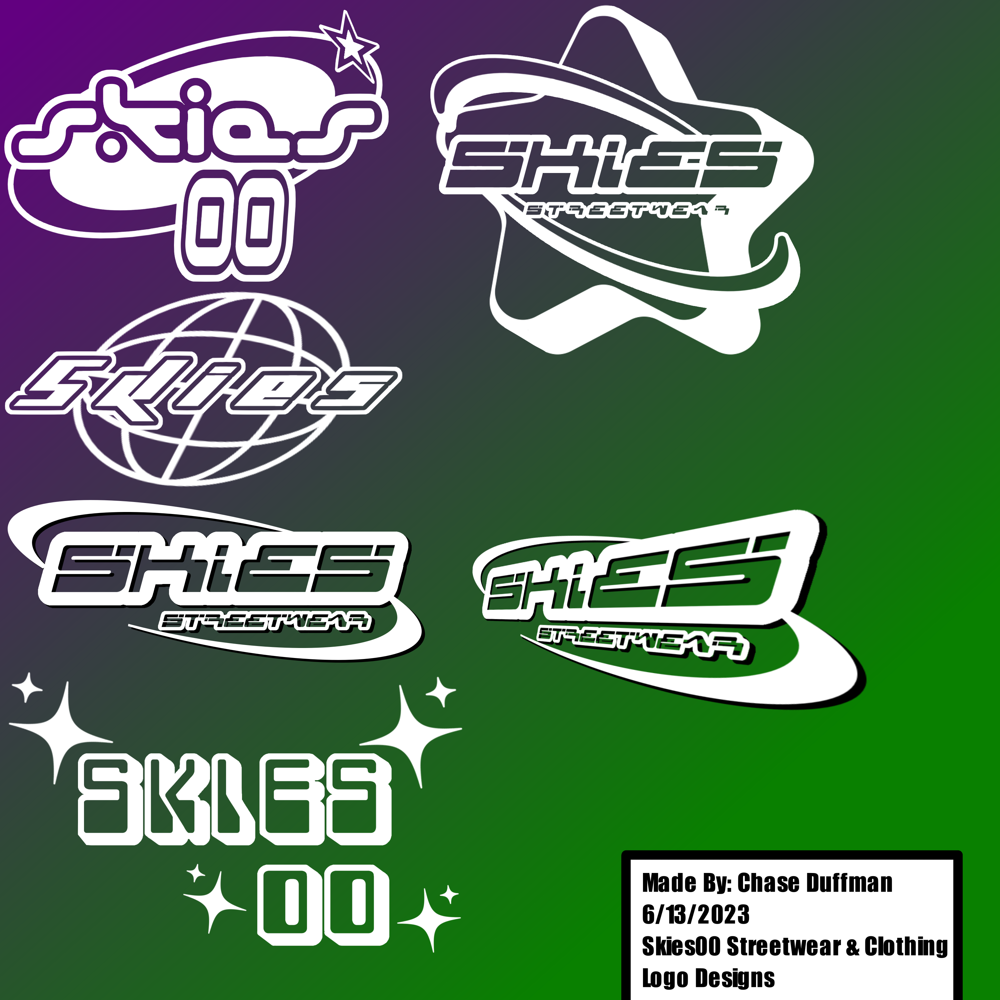
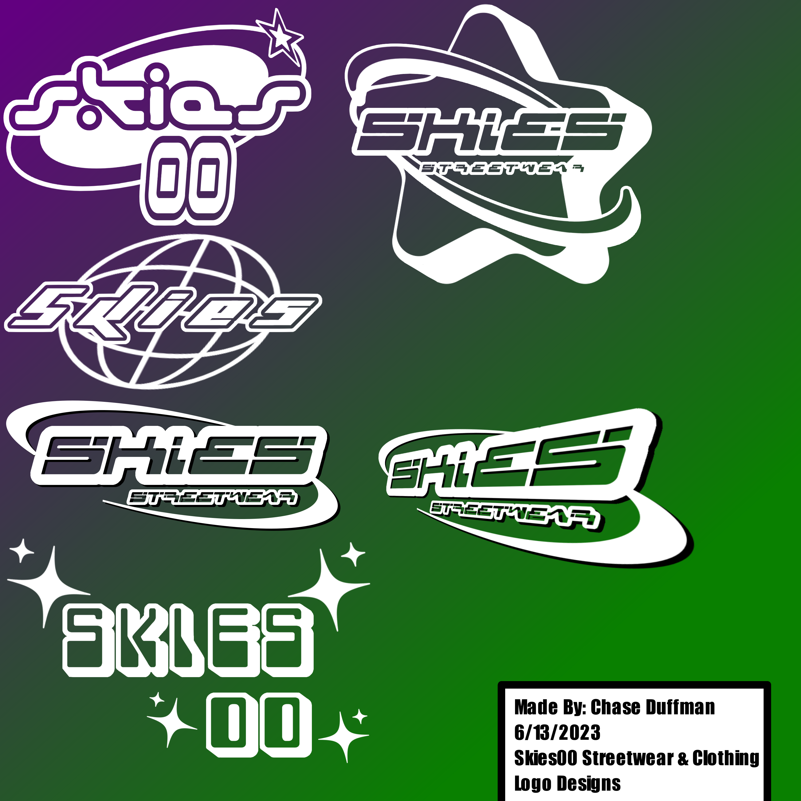

Clothing Brand|
 

Overview|
Date: August 9, 2024
Skies00 is a mock streetwear clothing brand I created with plans to bring the brand to life one day when funding allows.
The branding was inspired by alternative brands like "Assholes Live Forever", "Adult Swim", and "Teen Hearts" with a more Y2K/Early 2000s take on it.
Contributions:|
I created the entire brand from the ground up. Branding, Merchandising, Social Media profiles, and more!
Motivation:|
I wanted to create something more than just another artwork or music project. I also often feel very lost in the world of fashion and apparel so I wanted to give myself and people like me, a brand that spoke to them directly.
Development:|
I used Krita to plan out all the Logos, Clothing Mockups, and Labels. I then hopped into Blender to make some alternative logos for the website.